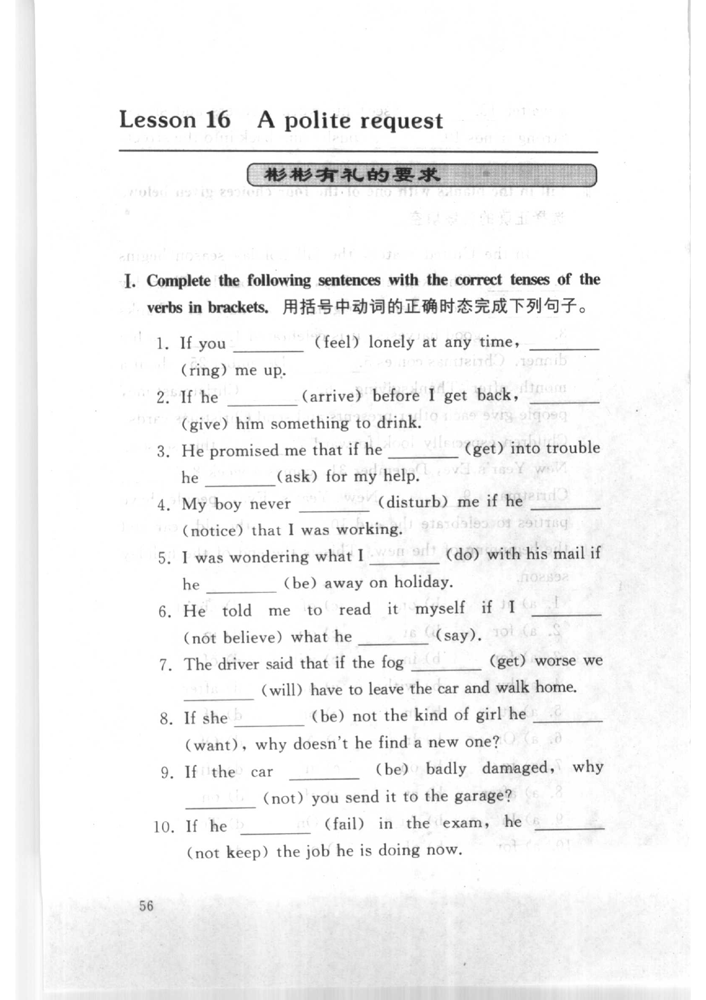
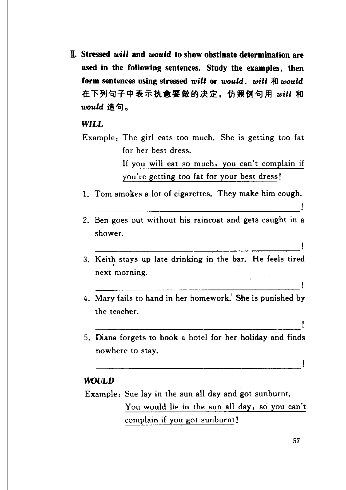
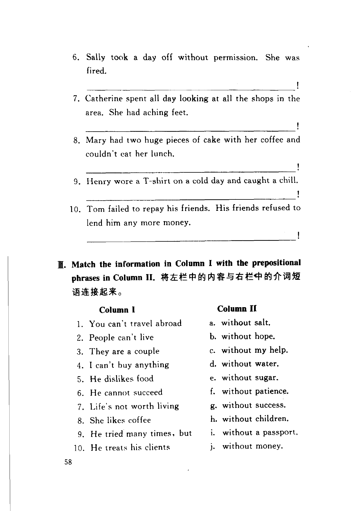

Grammar exercises · 语法练习
I. Complete the following sentences with the correct tenses of the verbs in brackets.
用括号中动词的正确时态完成下列句子。
-
I. Conditionals — If you (feel) lonely at any time, (ring) me up.
-
I. Conditionals — If he (arrive) before I get back, (give) him something to drink.
-
I. Conditionals — He promised me that if he (get) into trouble he (ask) for my help.
-
I. Conditionals — My boy never (disturb) me if he (notice) that I was working.
-
I. Conditionals — I was wondering what I (do) with his mail if he (be) away on holiday.
-
I. Conditionals — He told me to read it myself if I (not believe) what he (say).
-
I. Conditionals — The driver said that if the fog (get) worse we (will) have to leave the car and walk home.
-
I. Conditionals — If she (be) not the kind of girl he (want), why doesn't he find a new one?
-
I. Conditionals — If the car (be) badly damaged, why (not) you send it to the garage?
-
I. Conditionals — If he (fail) in the exam, he (not keep) the job he is doing now.
II. Stressed will and would to show obstinate determination are used in the following sentences. Study the examples, then form sentences using stressed will or would.
will 和 would 在下列句子中表示执意要做的决定，仿照例句用 will 和 would 造句。
WILL
Example · 例句
The girl eats too much. She is getting too fat for her best dress.
If you will eat so much, you can't complain if you're getting too fat for your best dress!
-
II. Stressed will — Tom smokes a lot of cigarettes. They make him cough.
-
II. Stressed will — Ben goes out without his raincoat and gets caught in a shower.
-
II. Stressed will — Keith stays up late drinking in the bar. He feels tired next morning.
-
II. Stressed will — Mary fails to hand in her homework. She is punished by the teacher.
-
II. Stressed will — Diana forgets to book a hotel for her holiday and finds nowhere to stay.
WOULD
Example · 例句
Sue lay in the sun all day and got sunburnt.
You would lie in the sun all day, so you can't complain if you got sunburnt!
-
II. Stressed would — Sally took a day off without permission. She was fired.
-
II. Stressed would — Catherine spent all day looking at all the shops in the area. She had aching feet.
-
II. Stressed would — Mary had two huge pieces of cake with her coffee and couldn't eat her lunch.
-
II. Stressed would — Henry wore a T-shirt on a cold day and caught a chill.
-
II. Stressed would — Tom failed to repay his friends. His friends refused to lend him any more money.
III. Match the information in Column I with the prepositional phrases in Column II.
将左栏中的内容与右栏中的介词短语连接起来。
Column I
1. You can't travel abroad
2. People can't live
3. They are a couple
4. I can't buy anything
5. He dislikes food
6. He cannot succeed
7. Life's not worth living
8. She likes coffee
9. He tried many times, but
10. He treats his clients
Column II
a. without salt.
b. without hope.
c. without my help.
d. without water.
e. without sugar.
f. without patience.
g. without success.
h. without children.
i. without a passport.
j. without money.
-
III. Match — 1. You can't travel abroad
-
III. Match — 2. People can't live
-
III. Match — 3. They are a couple
-
III. Match — 4. I can't buy anything
-
III. Match — 5. He dislikes food
-
III. Match — 6. He cannot succeed
-
III. Match — 7. Life's not worth living
-
III. Match — 8. She likes coffee
-
III. Match — 9. He tried many times, but
-
III. Match — 10. He treats his clients
Original images · 原图对照
Expand a page to compare it with the transcription. Open the original in a new tab to zoom in.
展开原图核对文字，也可以在新标签页打开原图放大查看。
Book page 1 · Exercise I (conditionals, items 1–10)
Open original · 打开原图 ↗ Download original · 下载原图


Book page 2 · Exercise II (stressed will, items 1–5; stressed would, start)
Open original · 打开原图 ↗ Download original · 下载原图


Book page 3 · Exercise II (stressed would, items 6–10) and Exercise III (matching, items 1–10)
Open original · 打开原图 ↗ Download original · 下载原图


Your notes and answers
Use this space for longer responses or exercises that do not have an individual answer box.